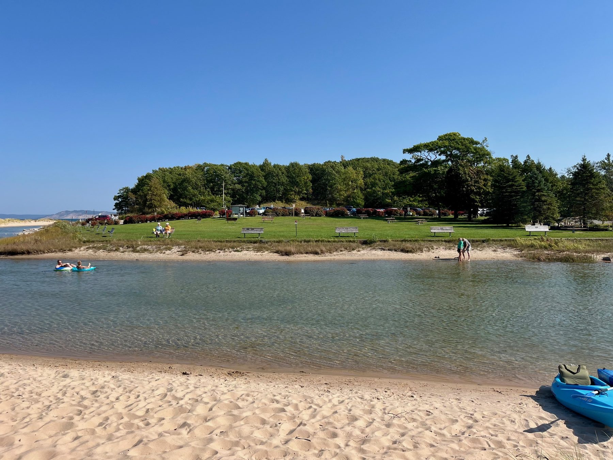

Guides
Lake Township Park
At the mouth of the Platte River on Lake Michigan — one of the most beautiful spots on the shoreline.
Lake Township Park sits at the end of Lake Michigan Road, where the Platte River empties into Platte Bay, with sweeping views of the Sleeping Bear Dunes. The park is the pride of the Township and a favorite destination for swimmers, picnickers, anglers, and the many paddlers and tubers who end their Platte River float here each summer.
The park offers picnic tables, grills, benches, modern restrooms, and access to both the warm, shallow waters of the river mouth and the Lake Michigan beach beyond. Canoes, kayaks, and paddleboards can be launched at the park, and the river’s gentle current makes an upstream paddle and easy return float a popular outing. In the fall, the river mouth draws salmon anglers from across the region.
Parking & Fees
A $5.00 daily parking fee is charged to non-Township residents. The parking fee goes toward maintaining the tables, benches, grills, restrooms, and grounds. Please note that National Park Service passes are not valid in the township lot — the park is separate from the adjacent Sleeping Bear Dunes National Lakeshore parking areas.
A seasonal parking pass is available for $40.00 for friends and relatives who visit regularly. Season passes are available at the Township Hall during regular office hours and from parking lot attendants.


Support the Park — Lake Township Park Fund
Donations to the Lake Township Park Fund help offset the cost of maintenance and improvements, and Riverside Canoes generously contributes $1,000 annually and matches donations up to another $1,000. With a tax-deductible gift of $25.00 or more, you can also “leave your mark” with a personalized plaque (1″ x 3″, up to 3 lines of 25 characters) on the Park Supporters display at the park kiosk — a lasting way to honor a memorial, marriage, birth, anniversary, graduation, family member, or beloved pet.
Contact the Township Office at 231-325-5202 to take part. The Township Board thanks our individual donors and Riverside Canoes for their continued support.